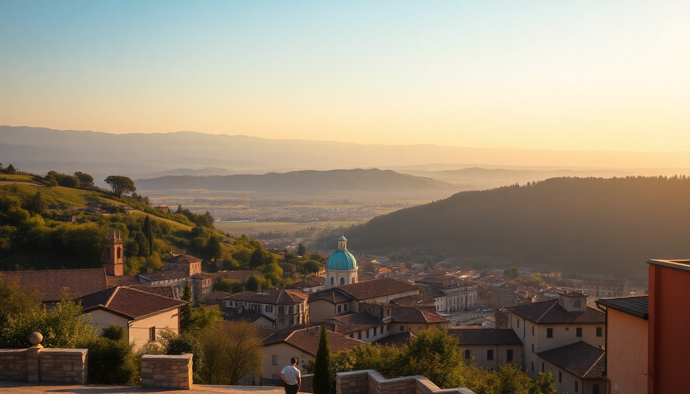

Best Day Trips from Bologna: Modena, Parma & Ravenna

I spent a week based in Bologna last fall, and honestly, the city itself is so good—towers, tortellini, porticoes—that I almost didn’t leave. But each morning I forced myself onto a train, and every single trip was worth it. Here’s what I learned about the three best day trips from Bologna: Modena, Parma, and Ravenna. No fluff, just the logistics and honest opinions.
Why base yourself in Bologna for day trips?
Bologna’s central station, Bologna Centrale, is a hub on the high-speed line. You can be in Modena in 20 minutes, Parma in 50, and Ravenna in about 80. I stayed at Hotel Artemide near the station—nothing fancy, but clean and a five-minute walk from the platforms. That meant I could grab a coffee and a cornetto at Pasticceria Gamberini on Via Marconi before catching the 8:15 train. You don’t need a car for any of these trips. Trenitalia regional trains are frequent and cheap (Modena is €3.40 one-way). Just buy tickets on the Trenitalia app before you board.
What’s the best way to do Modena in half a day?
Modena is tiny, which works in its favor. The train station is a 15-minute walk from Piazza Grande, the UNESCO-listed heart of town. I walked straight to Mercato Albinelli, the indoor food market, and grabbed a tigella (warm flatbread stuffed with cured meats) from Bar Albinelli. That alone was better than any sit-down lunch I had later.
The main draw is the Enzo Ferrari Museum (if you care about cars) or the Acetaia di Giorgio tour for balsamic vinegar. I did the balsamic tour—it’s a 45-minute walk from the center or a €10 taxi. They explained how the vinegar ages in barrels for 12, 25, and even 50 years. I bought a small bottle of the 25-year for €28. Overpriced? Maybe. But I still use it.
- Lunch stop: Osteria Francescana is the famous three-Michelin-star spot, but you need to book months ahead. I skipped it. Instead, I ate at Trattoria Aldina, a no-reservations place near Piazza Matteotti. The tortellini in brodo was exactly what you want: simple, rich, and €12.
- Time budget: Arrive by 10 AM, leave by 3 PM. You’ll see the market, the cathedral, and one museum comfortably.
Is Parma worth the longer train ride?
Yes, but only if you like ham and cheese. The train from Bologna Centrale to Parma takes 50 minutes on the regional. I arrived around 10:30 and walked straight to Piazza Garibaldi for a coffee. The real action is at the Mercato di Parma, a covered market where you can taste Prosciutto di Parma and Parmigiano-Reggiano directly from the producers. I spent €15 on a plate of three different aged Parmesans and a glass of Lambrusco. That was my breakfast.
The Teatro Regio is worth a peek if you like opera—it’s one of the most famous in Italy. But the highlight for me was the Cattedrale di Parma, specifically the dome fresco by Correggio. It’s dizzying in the best way.
- Food stop: Trattoria Corrieri near the duomo. I had anolini in brodo (Parma’s version of stuffed pasta) and a slice of torta fritta (fried dough). Total: €18.
- Tourist trap warning: The Parmigiano-Reggiano factory tours outside town are popular, but they require a car or a taxi (€25 each way). I skipped it and just bought cheese at the market. Same quality, less hassle.
- Time budget: Arrive by 10:30 AM, leave by 4 PM. You can see the cathedral, market, and have a proper lunch.
How do you tackle Ravenna’s mosaics without rushing?
Ravenna is further east, about 80 minutes from Bologna Centrale on the regional train. The station is a 10-minute walk from the historic center. The mosaics are spread across eight UNESCO sites, but you can see the best three in two hours if you walk fast.
I started at the Basilica di San Vitale, which has the most famous mosaics—emperor Justinian and his court in glittering tiles. Then the Mausoleum of Galla Placidia is literally next door, and the starry ceiling mosaic is the most peaceful thing I saw all trip. The Battistero Neoniano is a five-minute walk away.
- Lunch stop: Ca’ de Vèn near Piazza del Popolo. I had piadina (flatbread) with squacquerone cheese and rocket. Simple, cheap (€7), and better than any tourist-trap restaurant on the main square.
- Practical tip: Buy the Mosaic Ticket (€12.50) at the ticket office near San Vitale. It covers all eight sites. Don’t skip the Basilica di Sant’Apollinare Nuovo—it’s a 15-minute walk down Via di Roma, but the procession of saints mosaic is stunning.
- Time budget: Arrive by 10 AM, leave by 4:30 PM. That gives you time for three churches, lunch, and a walk through the quiet streets.
FAQ
Which day trip is best for food lovers? Modena and Parma are tied. Modena gives you balsamic vinegar and the market; Parma gives you prosciutto and Parmesan. If you only have one day, pick Parma—the food is more iconic and the market experience is more hands-on.
Do I need to book train tickets in advance? For regional trains (all three of these trips), no. You can buy tickets at the station or on the Trenitalia app up to the minute of departure. For high-speed trains (not needed here), yes, book ahead for cheaper fares.
Is Ravenna too far for a day trip? No, but it’s the longest ride—80 minutes each way. The mosaics are worth it, and the city is quiet and flat, so it’s an easy walk. Just don’t plan anything else that day.
Conclusion
- Base yourself in Bologna near Bologna Centrale for easy train access. Hotel Artemide is a solid, no-fuss option.
- For Modena, hit Mercato Albinelli and a balsamic tour. Skip Osteria Francescana unless you booked months ago.
- For Parma, go straight to the Mercato di Parma for ham and cheese. Skip the factory tours unless you have a car.
- For Ravenna, buy the Mosaic Ticket and see San Vitale, Galla Placidia, and Sant’Apollinare Nuovo.
- All three trips work on regional trains from Bologna Centrale. No car needed.